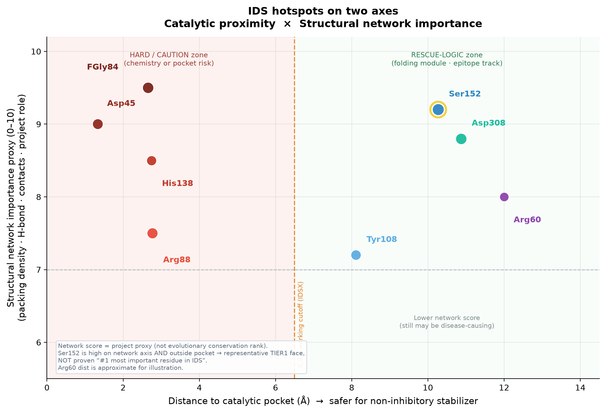
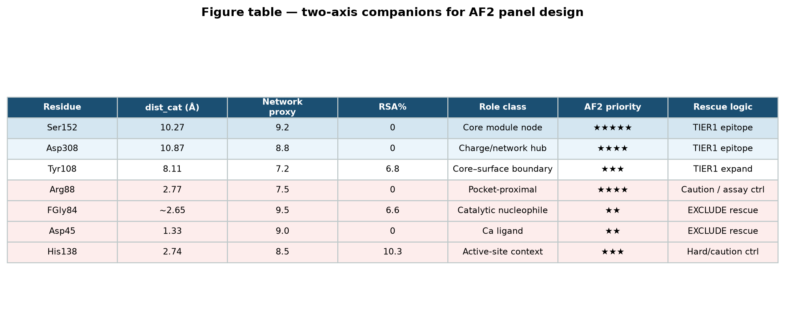
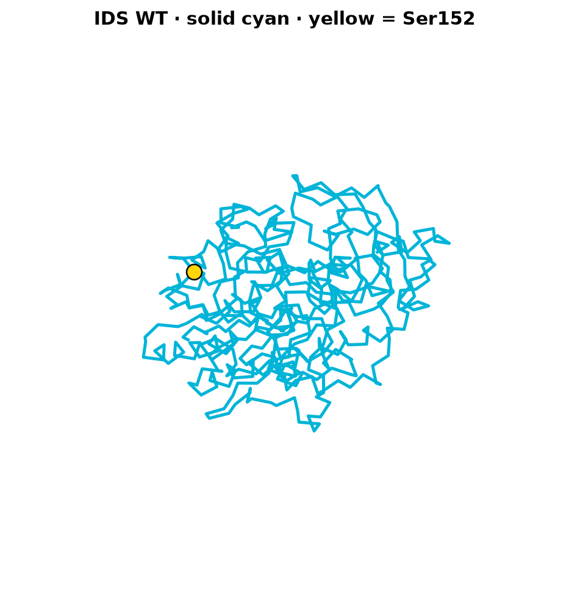
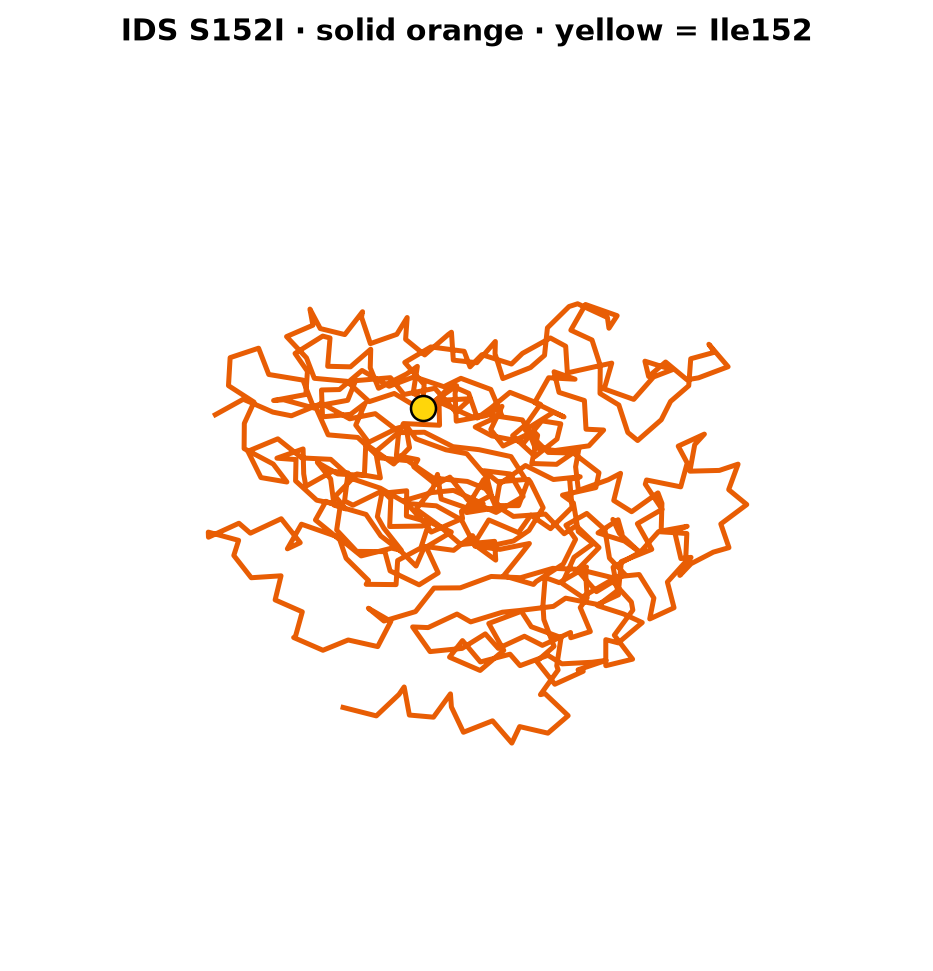
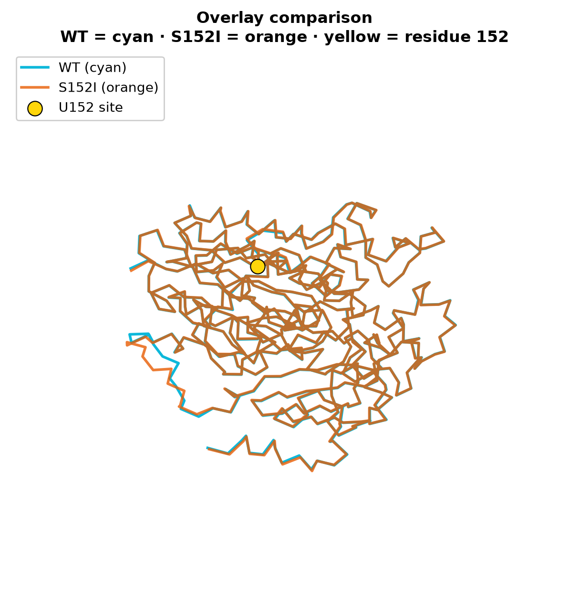
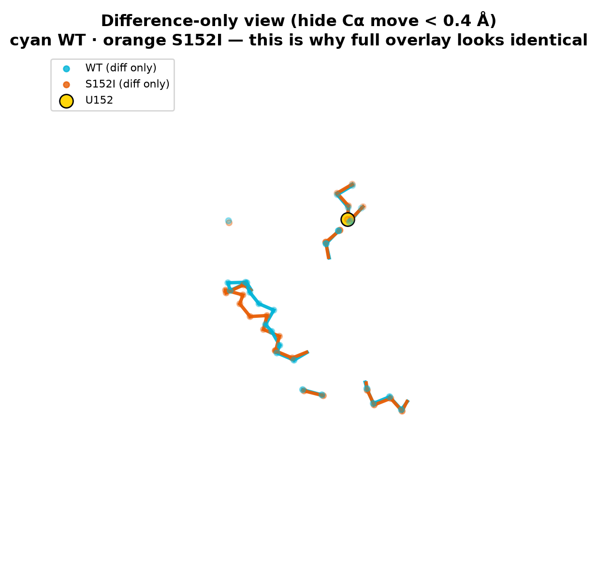
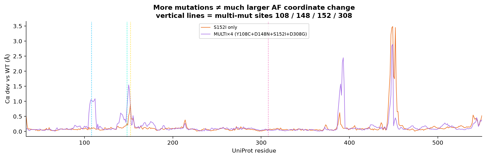
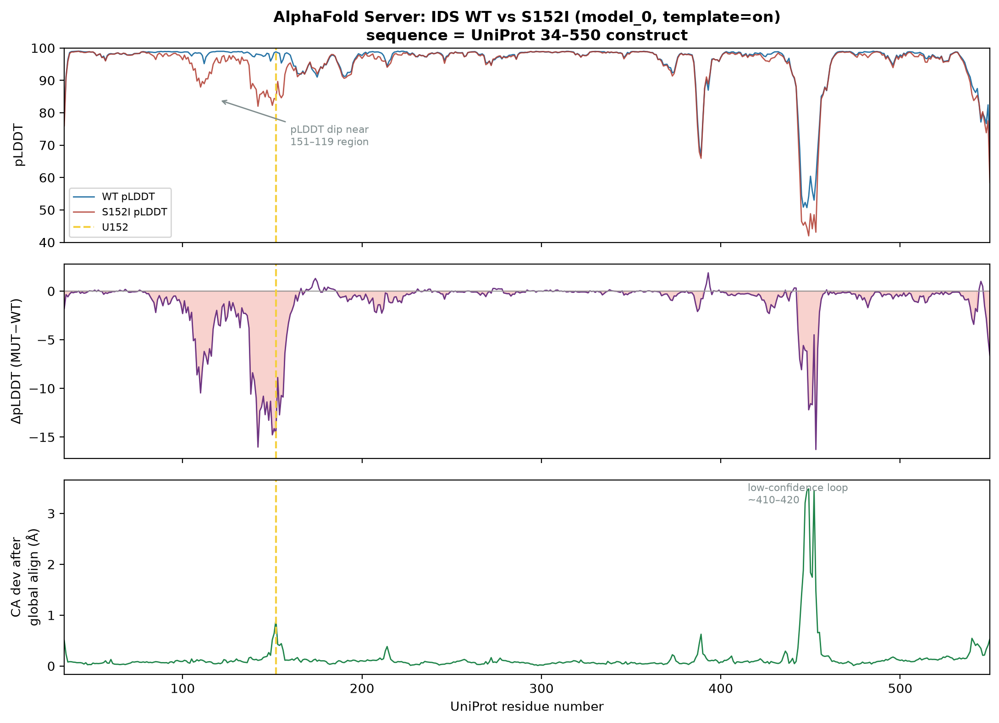
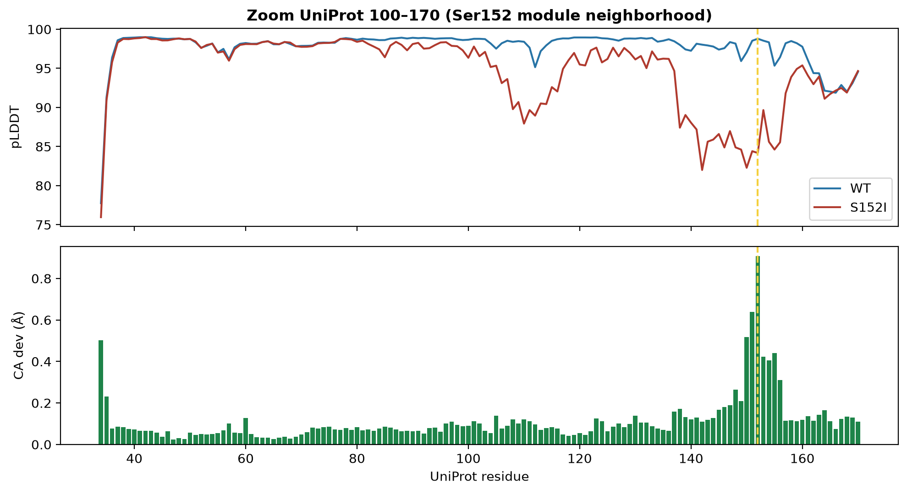

Computational evidence · hypothesis layer
계산이 프레임을
어떻게 지지·제한하는가
판결문이 아니라 가설 층. 2축 triage + AlphaFold Server WT vs S152I. fold 유사 ≠ ER 통과 · 열안정 보장.
1. 도구
| 도구 | IDSX |
|---|---|
| AlphaFold Server (AF3 계열) | ✅ 메인 — WT·S152I 완료 |
| ColabFold / 로컬 AF2 | 선택 교차확인 |
| FoldX / Rosetta ΔΔG | 다음 (모듈 불안정 수치) |
| RFdiffusion | 후속 — 표면 interface set에만 |
2. 2축 맵 (프로젝트 전역)
X = 촉매 거리 · Y = 네트워크 중요도 프록시. 오른쪽 상단 = rescue-logic.


3. 구조 직접 보기



차이만 보고 싶으면 → AF 구조 §1b · 다중 변이 → §1c MULTI×4


4. AlphaFold Server — 수치 요약
fold_ids_wild_type/ · fold_s152i_ids/ · 분석 AF2_runs/AF3_analysis/
| 항목 | 결과 |
|---|---|
| 서열 | UniProt 34–550 · S152↔I152 확인 |
| 템플릿 | 양쪽 ON |
| pTM | WT 0.97 · S152I 0.96 |
| Global Cα RMSD | ~0.37 Å |
| pLDDT U152 | 98.8 → 84.2 (Δ −14.6) |
| pLDDT U145–155 | 평균 큰 폭 하락 |
| AF-WT vs 5FQL | ~0.34 Å |


5. 해석 규율 (ER·열안정과 연결)
지지: native-like 좌표 모델은 존재 가능.
모듈 구간 자신감↓ → 미묘한 불안정 힌트.
표면 패치 정의용 좌표로 쓸 수 있다.
비지지: RMSD 작음 = 안정·ER 통과·무해.
pLDDT↓ = ERAD 증명.
AF = 열안정 보장.
프레임 정합: 대붕괴 가설 약화.
“네트워크만 유지되면 QC 통과에 유리할 수 있다”는
기각되지 않음 — ΔΔG·세포가 다음.
제한: 템플릿 ON · 시드 상이. 교차확인 시 template off / ΔΔG 권장.
6. 다음 계산 큐
- ΔΔG (WT vs S152I + 대조)
- (선택) template off
- 형제 TIER1 동일 파이프라인
- 패치 1개 확정 후 RFdiffusion — competence 기준 사전 등록